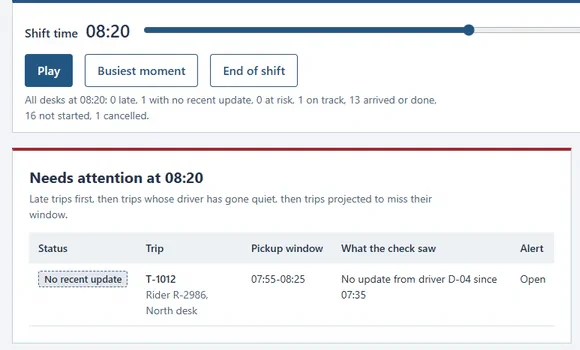

Late-trip monitor
Warns a medical-transport dispatch desk when a pickup is at risk, late, or the driver has gone quiet. A quiet driver is never reported as late.
Python standard library, SQLite, plain JavaScript
Try the demo: Late-trip monitorSource on GitHub: Late-trip monitor
What's checked, with one item not done yet
- Checked
- 11 tests, including one that runs the Python rules and the browser copy of them on the same data and needs them to agree.
- Not yet
- Not connected to a dispatch system, and it sends no messages.